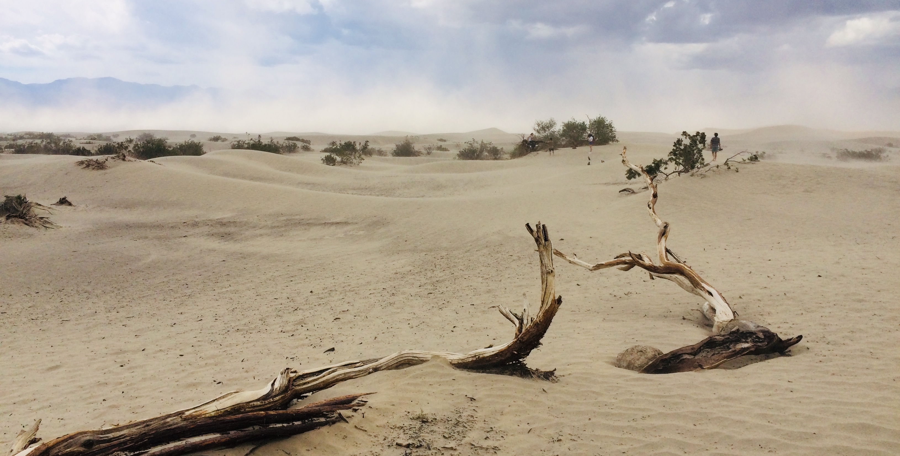

USA květen 2019

DEN 0
Možná to bude znít zvláštně, ale začal bych letem. Letěli jsme z Vídně do LA se společností Austrian Airlines a let trval 12 hodin. Letěli jsme severní stezkou přes Česko, Polskou, Skandinávii, Grónsko a Kanadu. Přestože jsme se toho s Klárou oba báli, bylo to úplně v pohodě. Jak by řekl tatínek, pořád tam někdo chodil a něco nám vnucoval, takže to rychle uteklo.
To nejlepší na letu ale nebylo jídlo a pití, ale to, že let byl “vyhlídkový”! Nad Evropou toho moc vidět nebylo, ale když jsme přeletěli Grónsko, byly vidět obrovské ledové kry plující v oceánu, které jsme díky krásnému počasí bez mráčků měli jako na dlani. Nad Kanadou jsme potom pozorovali, jak se krajina mění ze zmrzlého permafrostu na zelený koberec. To havní, z čeho mě osobně spadla čelist, teprve přišlo. Letěli jsme totiž nad Yosemitským národním parkem, který z ptačí perspektivy vypadal naprosto famózně. Jedná se o lesy zarostlé údolí, ze kterého vyčnívá několik skalních objektů. Nikdy jsem si nemyslel, že něco takového uvidím a musím uznat, že nebýt Kláry, ani si toho nevšimnu.
Třešničkou na dortu byl potom ppřílet do LA, kdy jsme celkem nízko přeletěli nad velkou částí města a měli jsme tak možnost z letadla vidět mrakodpady v centru a nápis HOLLYWOOD na kopci za nimi. Jen doplním, že mrakodrapy nejsou v LA nijak obvyklé. Celé město je pokryto nízkou zástavbou a mrakodrapy se nacházejí jen v centru. Z letadla tedy nic významného kromě nich a nápisu ani nemohlo být vidět.
Po příletu jsme si vystáli asi dvouhodinovou frontu na pohovor s imigračním pracovníkem, vyzvedli si našeho nového parťáka, který nás bude vozit následujících 14 dní po všech čertech a vyrazili jsme domů. Po cestě jsme se dostali na šestiproudou dálnici (v jednom směru), kde jsme asi hodinu jeli krokem. Domů jsme se tedy dostali celkem pozdě. Proto jsme po příjezdu zašli jen na rychlé tacos do stánku s rychlým občerstvením, kde lidé rozumí více španělsky, než anglicky, a šli jsme si lehnout.
Co se týče ubytování, bydlíme ve velice pěkné a klidně čtvrti, kde se není čeho bát. Bydlíme v malém přízemním domě, který jeho majitel prnajímá lidem přes Airbnb. Je to tedy spíše taková ubytovna :-) Pokud se chcete podívat, náš dům je na adrese 4242 Tujunga Avenue, LA . Na Google Streetview má celkem pěknou fotku :-)
DEN 1
První den v LA jsme začali stylově - na chodníku slávy. Vyfotili jsme se u hvězdy Morgana Freemana, Marilyn Monroe, nebo Walta Disneho. Kromě toho jsme také potkali lidi, se kterými jsme předchozí den seděli v letadle. Potom jsme se projeli po čtvrti Beverly Hills, kde bydlí místní smětánka. K vidění tedy byly hlavně velké honosné vily. Následoval oběd v jednom z nejtypičtějších fast foodů v Kalifornii, který se jmenuje In-N-Out Burger, a potom už jsme frčeli do Gettyho centra. Jedná se o obrovský komplex věnovaný umění, který je postavený na kopci nad LA, takže je odtamtud skutečně moc pěkný výhled na město. Kromě výhledu jsme ale v Gettyho centru obdivovali především obrazy (Rubens, Rembrandt, van Gogh, Manet aj.) a místní zahrady.
Den ještě nekončil, proto jsme se vydali na místní Pařížskou. Ta se v LA jmenuje Rodeo Drive. Kromě luxusního zboží a nádherných palmových alejí tam nic jiného k vidění nebylo. Myslím, že všichni víme, kdo se tam chtěl jít hlavně podívat :-) Na konci dne nás ještě čekala Griffitova observatoř, kam turisté jezdí hlavně kvůli dvěma výhledům - na město a na nápis HOLLYWOOD. Protože jsme kvůli husté dopravě dojeli na místo až za tmy, první z výhledů byl fantastický, ale druhý nebyl vůbec. Abych to vysvětlil, LA se ve tmě nádherně rozvísitilo, takže se jednalo o skvělý zážitek. Na druhou stranu, jeden z nejslavnějších nápisů světa ve tmě osvětlený nebyl, takže jsme ho ani moc neviděli.
DEN 2
Druhý den jsme trošku déle spali a po snídani se vydali do Universal Studios, což je vlastně zábavní park věnovaný filmům. Nachází se v něm nepřeberné množství atrakcí, které člověka zabaví na celý den. My s Klárou jsme byli na těchto:
- Prasinky a Bradavice - vesnička a Bradavický zámek v životní velikosti, v komplexu se nachází horská dráha, 4D projekce a hromada obchodů s tématikou Harryho Pottera;
- Dream Works Studio show - další 4D projekce s tématikou Kung Fu Panda,
- Walking Dead atrakce - procházka po postapokalyptické nemocnici, ve které vás lekají lidé převlečení za zombíky (tohle jsem málem nedal),
- Universal Studios tour - projížďka otevřeným autobusem po reálnýh studiích, kde se točila hromada slavných filmů; součástí prohlídky jsou i reálné ukázky některých scén, nebo efektů z filmů; tohle bylo opravdu zajímavé; ukazovali nám, jak v těchto studiích např. postavili maketu newyorských ulic, nebo jak se dělá efekt deště, nebo jsme byli v zákulisí ateliéru, kde se před nějakou dobou točila scéna Sběratelů kostí, ve které se byla zobrazena dopravní nehoda v metru způsobená zemětřesením - všechno z toho jsme si na prohlídce zažili - přijeli jsme tedy do ateliéru, který vypadal jako zastávka metra, a najednou se s námi začala třepat podlaha, potom se propadl strop a vedle mě začal hořet nějaký oheň, následně se z druhé strany vyřítila masa vody a já se bál, že nás to zaplaví :-)
Odpoledne jsme se jeli ještě podívat na Tichý oceán na Venice beach a potom jsme už frčeli domů.
DEN 3
Třetí den jsme posnídali sýrovou pizzu, kterou jsme nesnědli předchozí den na večeři, a vyrazili na sever. Kolem poledne jsme přijeli do malého městečka Pismo Beach, kde jsme se naobědvali - já jsem si dal fish and chips a Klára si dala quesadillas s hranolkama, které jsme dojídali ještě na večeři. Po obědě jsme se prišlo po molu na pláži a pokračovali v cestě.
Asi po hodině cesty jsme přijeli na Hearst Castle. Přestože je v názvu místa slovo “castle”, neboli zámek, já bych spíše řekl, že se jedná o takovou vilu. Objekt je postaven na vysokém kopci, ze kterého je nádherný výhled na Tichý oceán a okolní zelené kopce, na kterých se pásly krávy. Ve vile se do sebe motá hromada stylů a prvků. Ač byla budova vystavena na začátku 20. století, jsou v ní prvky ze starého Řecka, Říma, nebo Egypta. Jednoduše je to taková splácanina všeho a vlastně ničeho pořádně. V mých očích byl pan Hearst, který si nechal tento objekt postavit jako letní sídlo, člověkem, co nevěděl, co s penězi. Aby toho nebylo málo, kolem celé rezidence nechal navozit spoustu exotických zvířat, a to od antilop až po lední medvědy, kteří se podle mě museli v prosluněné Kalifornii dost natrápit.
Po zajímavé prohlídce nás čekala poslední zastávka toho dne. Jednalo se o místo, ze kterého bylo možné pozorovat na pláži ležící rypouše sloní - obrovské ploutvonožce, kteří se na Zemi vyskytují jen v oblastech blízkých Antarktidě a v Kalifornii :-) Ta zvířata sice hrozně smrděla, ale byl to opravdu zajímavý zážitek.
Večer jsme se ubytovali v hotelu a šli spát.
DEN 4
Čtrvtý den byl o vyhlídkách.
Vstali jsme, nasnídali se v hotelu a vyrazili na cestu po Pacific Coast Highway, což je silnice vedoucí po západním pobřeží USA. V průvodci jsem se dočetl, že na této cestě krása střídá nádheru a upřímně bylo to tak. Celou cestu se nám naskýtal nádherný výhled na útesy a oceán, takže jsme každou chvíli zastavovali, abychom si něco mohli vyfotit :-)
Jednou z hlavních zastávek byl Bixby Creek Bridge a poté městečko Pebble Beach, kde se nachází 17-Miles Drive. Jak už název napovídá, jedná se o 17 mil dlouhou cestu. Na této cestě je několik zastávek, kde člověk může vidět nejrůznější zajímavosti - cypřišové lesy, útes, na kterém hnízdí nějací ptáci, pláž atd. Cesta byla zajímavá, ale znovu bych tam asi nejel. Celá trasa ale končila v městě Monterrey, kde jsme zašli na oběd na náš asi miliontý hamburger v USA a potom jsme se šli podívat do místního akvária.
Bylo to takové to typické americké akvárium, kde člověk může vidět obrovské vodní nádrže, ve kterých plave spousta nejrůznějších ryb. Pro mě osobně bylo asi nejzajímavější to, že jsme viděli krmení tučňáků, že jsme si pohladili rejnoka a že jsme viděli krmení ostatních ryb, při němž vlezl potapěč přímo do vodní nádrže a my ho tak viděli, jak tam vedle nás plave potapěč s ostatníma rybkama :-)
Po konci prohlídky jsme sedli do auta a jeli do San Francisca, kde jsme se sešli s Joeym. Joey je člověk, kterého jsem našel na couchsurfingu a který nás nechal u sebe přespat tři noci. Joey bydlí v malém 2+kk na kraji SF společně se dvěma psy (Misha a Sage) a jedním hadem (je to krajta, ale nevím, jak se jmenuje). Joey je učitel na základní škole (zdravíme Řeku) a každý den dojíždí do práce do cca 40 mil vzdáleného města Mountain View v Sillicon Valley.
Po seznámení jsme se šli s Klárou najíst do mexické restaurace v našem neighborhoodu a šli jsme spát.
DEN 5
Pátý den jsme se probudili trošku později, nasnídali se a vyrazili do města. Čekala nás hodinová cesta metrem na druhý konec SF, odkud jsme šli na vyhlídku na Coit Tower, poté jsme se prošli po klikaté ulici Lombard Street a odtud jsme pokračovali do přístavu. Na oběd jsme si dali typický bagel (houska s dírkou uprostřed) a potom jsme vyrazili podél doků k největšímu lákadlu města - Golden Gate Bridge. Most je opravdu monumentální, takže jsme pořád jen fotili. Potom jsme chtěli jít ještě do dvou parků, ale bylo už pozdě a navíc nás přepadl déšť, takže jsme v prvním nasedli na autobus a jeli domů.
Večer jsme se ještě s Joey dívali na televizi a povídali si a kolem deváté jsme si šli lehnout.
DEN 6
Dneska nás čekala asi druhá největší památka v SF, a to Alcatraz. Tramvaj, kterou jsme se měli dostat na místo, odkud nám odjížděla na Alcatraz loď, měla zpoždění, takže jsme museli jet další lodí. Docela jsme kvůli tomu stresovali, ale nakonec to dobře dopadlo.
Na Alcatrazu jsme si prošli všechny místnosti, ať už to byly cely, jídelna, sprcha, místnost pro návštěvy, nebo knihovna. Po prohlídce začalo hrozně moc pršet, takže zpět do SF jsme přijeli úplně promočení. Před deštěm jsme se šli schovat do Hrad Rock Café, kde jsme se najedli a po obědě šli (neplánovaně) do sídla Levi’s, kde si Klára koupila nové rifle a já nové suché ponožky :-) Odpoledne jsme se ještě prošli po centru SF a Chinatownu a jeli domů.
Protože Joey spal a psi chtěli jít ven, vzali jsme je na procházku. Nebyla moc dlouhá, jen jsme obešli blok. Potom jsem napsal tento report a teď už jdeme spát.
DEN 7
Ráno jsme se vzbudili u Joeyho v SF, zabalili si věci a vyrazili směr národní park Yosemite. Cestou jsme se stavili na oběd do nějakého BBQ restaurantu u dálnice, kde si Klára objednala sandwich, ale to, co jí donesli vypadalo přesně jako hamburger. Cesta byla celkem dlouhá, takže jsme do Yosemitu dorazili až kolem třetí hodiny odpoledne.
Hned po příjezdu jsme navštívili místní informace, kde nám ranger poradil, co v následujících 24 hodinách, kdy jsme měli být v parku, dělat. Naše první zastávka proto byl sekvojový háj, k němuž vedla asi 2 km dlouhá cesta lesem. Na této procházce nás zastihl déšť, takže jsme dost zmokli a navíc jsme byli úplně špinaví, protože se šlo po bahnitých lesních cestách.
Nasedli jsme proto rychle do auta a jeli se ubytovat do vesničky v údolí. Ubytovaní jsme nebyli v hotelu, ale v takovém stanu. Jednalo se o dřevěnou platformu, která byla překrytá nějakou látkou. Nebudeme se nic nalhávat, i když jsme měli v noci zapnutý přímotop na maximum, byla tam dost zima.
Po vybalení věcí jsme ale ještě chtěli vidět něco z parku, takže jsme sedli na autobus, který jezdí zdarma po celém parku a nechali se zavést k místu, kde začíná další hike (procházka, túra). Jednalo se o cestu k Mirror Lake, což je jezero, jehož jméno je podle nás odvozeno od toho, že se v jeho hladině odráží skály vedle něj (Mirror Lake = zrcadlové jezero, pozn. redaktora). Tahle procházka se mi hrozně moc líbila. Šlo se totiž takovou klidnou lesní cestou, nepršelo a co víc - viděli jsme na ní několikrát srny a plavajícího bobra :-)
Po návratu do vesničky jsme zašli na pizzu a šli spát.
DEN 8
Jak už jsem říkal, vstávání ve stanu nebylo nejpříjemnější, ale zvládli jsme to. Po probuzení jsme si dali snídani, zašli na čaj a vyrazili na další túru. Tentokrát se jednalo o túru s názvem Mist Trail, která byla v průvodcích zařazená do kategorie “náročné” (kategorie byly tři - nenáročné, mírně náročné a náročné). To jsme ale s Klárou nevěděli.
Túra měřila asi 13 km a v průběhu 4 hodin, co jsme ji šli, jsme zdolali převýšení přesahující 800 m. Cesta vedla do strmého kopce kolem dvou vodopádů (posílal jsem na fotkách). U prvního z nich se šlo cestou, kde jsme celí promokli od vody, která stříkala z vodopádu. Cestou zpět jsme se zase brodili ve vodě, takže jsme měli mokro v botech. Musím říct, že jsme si asi sáhli na dno, ale stálo to za to. Výhledy do údolí i na vodopády za to prostě stály.
Po návratu do vesničky jsme se najedli a vyrazili autem do Visalie - cca stotisícového města na jih od Yosemitu. V parku se mi opravdu moc líbilo. Byla škoda, že jsme tam strávili jen dva necelé dny. K vidění bylo o mnoho více, takže jsme se shodli na tom, že se musíme zase někdy vrátit zpět a projít i ostatní túry, které park nabízí.
Ve Visalii jsme spali přes couchsurfing u Mellisy. Když jsme přijeli, Mellisa nebyla doma. Nechala nám ale zprávu, že nechala klíče pod rohožkou a že máme jít klidně k ní domů. Uvnitř bylo vše připraveno na náš příjezd - postel, ručníky a papír s “návodem k použití” (heslo k wi-fi, informace, kde je odpadkový koš, kde najdeme čaj, jak se používá sprcha atd.). Protože jsme byli unavení po túře, jen jsme se osprchovali a šli spát.
DEN 9
Den s pořadovým číslem 9 byl specifický v tom, že jsme na něj na poslední chvíli změnili program. Důvodem bylo počasí. Původně jsme měli jet do národního parku Sequoia, kde rostou největší stromy na světě. Nicméně podle předpovědí tam zrovna byla sněhová bouře a pro vjezd do parku bylo zapotřebí mít řetězy. Rozhodli jsme se proto zrušit ubytování na danou noc a pokračovat na naši další zastávku - do Údolí smrti.
Vyjeli jsme hned ráno, protože náš čekala cesta dlouhá cca 5,5 hodiny. Snídani i oběd jsme si proto dali na benzínkách. Do parku jsme dorazili i tak až odpoledne a už jsme v něm toho moc nestihli. Co jsme ale stihli byla další nepřízeň počasí - zažili jsme písečnou bouři! Když jsme projížděli údolím, začalo hrozně moc foukat. A vítr vířil prach tak moc, že v některých částech silnice jsem neviděl ani na kapotu auta. Celou cestu jsem proto jel se zapnutými dálkovými světly. S dálkovými jsem jel ale jen proto, že na našem autě neumím zapnout klasická světla. I když nám počasí úplně nepřálo, udělali jsme v údolí několik zastávek, např. na písečných dunách, nebo na vyhlídce na skály, a prošli jsme se po jedné stezce.
Pokud bych měl více popsat, jak to v údolí smrti vypadá, řekl bych, že je tam prostě mrtvo. Ne vážně, jedná se o poušť, kde je jen kamení, písek a prach. Sem tam roste pár nízkých keřů a občas je vidět i nějaký kaktus. Co se týče fauny, průvodci tvrdí, že se v údolí vyskytují nějaké horské kozy, nebo hadi. My jsme viděli jen ještěrky a jednoho kojota.
Po průjezdu parkem jsme jeli na hotel, kde jsme se ubytovali a zašli se najíst. Já jsem si dal špagety s masovými koulemi a Klára si dala grilované kuřecí kousky v tortile.
DEN 10
Další den jsme spali o něco déle, abychom nabrali síly po náročné cestě. Na snídani jsme potom zašli do stejné hotelové restaurace, kde jsme měli den před tím večeři. Sice říkám, že jsme šli na snídani, ale byl to spíš brunch. Já jsem si totiž dal hovězí steak s míchanými vajíčky a bramborama (bylo to poprvé v životě, co jsem snídal steak) a Klára měla dvě velké palačinky s javorovým sirupem, které nedojedla, takže mi zbylo ještě na dezert :-)
Po vydatné snídani jsme se vrátili zpět do údolí, abychom se podívali na to, co jsme předchozí den nestihli. Turisté se do parku jezdí dívat hlavně na druhý nejnižší bod na západní polokouli, který se jmenuje Badwater Basin, a na různé skalní útvary. Obojí jsme navštívili. Cestou z údolí jsme doplnili vodu v informačním centru a vyjeli do Las Vegas. Musím říct, že před návštěvou jsem moc nevěděl, co čekat, ale park toho nabízí celkem dost a mně osobně se tam moc líbilo. Za návštěvu to tedy určitě stálo :-)
V Las Vegas jsme ubytovaní v hotelu Stratosphere, který se pyšní druhou nejvyšší věží na západní polokouli. Jedná se o vyhlídkovou věž, kde ale kromě restaurace a možnosti zúčastnit se některého z adrenalinových zážitků nic není. Po vybalení věcí jsme zašli na večeři do Taco Bell, amerického fast foodu, kde se prodává mexické jídlo a kam chtěla Klára jít od prvního dne v USA. Cestou tam a zpět jsme procházeli přes nějakou divnou čtvrť, kde jsme potkali tolik bezdomovců, chlapů přeoperovaných na holky a jiných individuí, kolik jsem jich nepotkal za pět let studia v Praze. Upřímně musím říct, že jsem byl po návratu na hotel rád, že jsme zase zpátky.
DEN 11
Jedenáctý den nás čekala jen prohlídka Las Vegas, proto jsme zase spali o něco déle. Po snídani jsme vyrazili nadzemkou na začátek hlavní ulice v Las Vegas, která se oficiálně jmenuje Las Vegas Boulevard. Ano, je to velice originální. Všude se jí ale říká Strip. Na této ulici se nachází všechny známé hotely a kasína ve městě.
Naši prohlídku jsme začali trošku netradičně v CBS Television City, kde jsme se zúčastnili průzkumu americké televize CBS. Průzkum probíhal tak, že nás zavřeli do jedné místnosti s počítači a pustili nám díl jednoho seriálu, který ještě neběží v televizích. Po promítání nám dali dotazník, který jsme museli vyplnit. To, jaký seriál se bude promítat, se nikdy neví dopředu. My s Klárou jsme viděli první díl sitcomu, který byl o Bobovi, bělošském prodejci ponožek ve středních letech. Bob dostal hned na začátku dílu infarkt a byl převezen do nemocnice, kde poznal černošskou nemocniční sestru Abisholu pocházející z Nigérie. Bob se do ní zamiloval a potom jí celý díl uháněl, aby s ním šla na rande. S Klárou jsme se shodli, že to bylo zajímavé a pokud to pustí do vysílání, budeme seriál sledovat :-)
Tohle byl asi vrchol dnešního dne. Potom jsme totiž už šli jen kolem hotelů a kasín zpět na náš hotel, kam jsme dorazili až kolem sedmé hodiny večer. Krokoměr mi napočítal, že jsme ušli 13 km. Cestou jsme se zastavili v několika obchodech, ale moc jsme toho nekoupili, jen pár suvenýrů a Klára si koupila druhé rifle, a zase Levisky :-)
Po návratu na hotel jsme zašli ještě do hotelového kasína, kde jsme zkusili štěstí v místních automatech. Po asi 20 minutách jsme byli chudší o 10 dolarů, takže jsme to zabalili a šli na večeři do McDonald’s :-)
DEN 12
Dvanáctý den jsme se vzbudili hned brzo ráno, odhlásili se z hotelu v Las Vegas a vyrazili znovu na cestu. Naší další zastávkou byl národní park Zion. I když jsme vyrazili kolem sedmé a cesta zabrala tři hodiny, na místo jsme dorazili někdy kolem jedenácté hodiny dopoledne, protože jsme zároveň přejeli do jiného časového pásma.
Národní park Zion se nachází na jihu státu Utah a jeho hlavní dominantou je údolí, kterým protéká řeka Virgin. Toto údolí je tvořeno do červena zbarvnými skalními útvary, které v kombinaci se zelenou trávou a stromy vytváří nádherné úkazy. Ne nadarmo je NP Zion označován v mnohých průvodcích jako jeden z nejhezčích parků v USA.
My jsme po příjezdu sedli na bezplatný autobus a nechali se zavézt na zastávku, ze které jsme vyšli na naši první túru. Jednalo se o výšlap na jednu ze skal, odkud byl nádherný výhled do údolí. Vyhlídka se jmenovala Scout’s Lookout. Z ní bylo možné pokračovat na skálu tak vysokou, že na ní létají jen andělé (proto se jmenuje Angel’s Landing). Tam jsme ale už nešli. Jedná se totiž o cestu po kraji skály, kde se člověk drží jen lana a pod vámi je sráz hlukobý cca 600 m. Jednak jsme se báli, že skončíme jako několik nešťastníků, kteří tam za 100 let existence parku zahučeli, druhak tam byla taková tlačenka, že nás to ani nelákalo. Jo, a taky nejsme andělé :-) Sešli jsme proto zpět do údolí, zašli jsme si na oběd (burger a hot dog) a potom jsme se vydali ještě ke dvěma vodopádům. Oba tyto tracky byly velice krátké, takže jsme je měli hned za sebou.
Z parku jsme vyjeli kolem čtvrté hodiny a vyrazili jsme se na jih, konkrétně do Page ve státu Arizona. Jedná se o malé městečko, kam jsme dorazili kolem sedmé hodiny, ubytovali se do jednoho domu přes Airbnb a zašli na pizzu do Pizza Hutu :-)
DEN 13
Poslední den naší výpravy nezačal úplně podle plánu. Den předem jsme totiž obdrželi zprávu o tom, že se kvůli počasí ruší naše prohlídka místa zvaného Antilope Canyon. Pokud se podíváte na fotky, určitě se vám vybaví tapeta z Windows. Sice nás storno návštěvy Antilope Canyonu štvalo, ale na druhou stranu je v Page ještě jedna věc, na kterou se tam jezdí dívat turisté z celého světa.
{kind=link}
Jedná se o vyhlídku zvanou Horseshoe Bend, která se nachází asi 5 km za městem. Horseshoe Bend je vlastně meandr řeky Colorado, které se podařilo v daném místě vyhloubit obří kaňon v podobě koňské podkovy, odtud také Horseshoe Bend. Pro mě se jedná o jedno z nejikoničtějších míst západu USA, takže vyhlídka byla skutečným zážitkem.
Cestou z vyhlídky nám začalo trošku poprchat a když jsme vyjížděli směr Grand Canyon, už pršelo. Cestou také začala teplota klesat k bodu mrazu a než jsme se nadáli, dostali jsme se do husté sněhové vánice. Musím říct, že to byl jeden z dalších momentů naší cesty, kdy jsem se opravdu bál. Venku sněžilo tak, jak v Brně nesněžilo celou předchozí zimu, stěrače jeli na maximum, hrozně se mlžilo přední okno a do toho se na palubní desce rozsvítilo červené světýlko, které mě mělo informovat o tom, že nám odešel tempomat. Za volantem jsem toho tedy moc neviděl a obloha před námi nevypadala, že by se mělo v dalších chvílích něco změnit. Celou dobu jsem si u toho ještě říkal, že to ani nemlže být pravda - byli jsme v Arizoně, kde je poušť a podle průvodců tam má být na jaře mezi 20 a 30 °C. Jenže se mi to nezdálo, nebyl to sen. Naštěstí jsme za 10 minut sjeli z takového “horského průsmyku” dolů do údolí a po sněhu nebyla ani vidu ani slechu. Když roztál sníh na kapotě, najednou začal fungovat i tempomat, takže vše bylo zase při starém a my jsme spokojeně fičeli do Grand Canyonu. To ale bohužel nebyl poslední sníh, který jsme ten den viděli.
Když jsme někdy kolem oběda přijížděli do Grand Canyonu, bylo kolem 0 °C (pořád jsme v Arizoně) a v protisměru nás míjela auta, která měla na střeše dobrých 10 cm sněhu. Paní na vstupní bráně nás potom ujistila, že sice ráno dost sněžilo, ale že se nemusíme bát. Už prý vychází sluníčko a během následujících hodin to bude úplně v pohodě. Tak jsme vjeli do parku, zastavili se na první vyhlídce do kaňonu, která byla naprosto nádherná a pokračovali jsme do Grand Canyon Village - vesničky na úpatí kaňonu, kde jsou další vyhlídky.
Pro představu ještě doplním, že Grand Canyon NP je tvořen, jak název napovídá, jedním obrovským kaňonem, ve kterém teče řeka Colorado. Kaňon je dlouhý cca 450 km, jeho šířka se pohybuje v rozmezí od 500 m do 29 km. Hloubku kaňonu neznám, ale když se podíváte dolů ze srázu, mnohdy není vidět, kde je zem :-) Kaňon je starý kolem 1,8 miliardy let, což je přibližně 1/3 stáří Země. Na seznam UNESCO byl zařazen v roce 1979. Zvlášť z toho důvodu, že je tak obrovský (a hlavně hluboký), se tam moc nechodí na nějaké túry. Samozřejmě to asi jde, ale tyto túry jsou už pro zdatné lidi, ne pro nás s Klárou. Nejčastěji tam turisté proto jezdí na vyhlídky. Stačí si totiž stoupnout na okraj kaňonu a kochat se :-)
A to přesně byl náš plán - jet do Grand Canyon Village, stoupnout si na okraj a kochat se. Před tím jsme se ale zastavili na oběd (pizza a hot dog) a na místní poštu. Mezitím, co jsme ale jedli, zase proběhla další 10minutová sněhová “přeháňka”, takže jsme po příjezdu do vesničky nemíjeli už jen zasněžená auta, ale dokonce i rolbaře.
Sníh by asi tolik nevadil, ale nejhorší bylo, že se hned oteplilo. Když jsem tedy přišli na okraj kaňonu a podívali jsme se dolů, viděli jsme jen bílý opar, který vycházel z kaňonu. Z kaňonu jsme tedy v tu chvíli viděli úplné hovno. To byla další chvíle, kdy jsem se cítil fakt na nic. Řekli jsme si ale, že se projdeme podél kaňonu a uvidíme, zda se to nezlepší. Naštěstí se to během další hodiny zlepšilo, takže jsme jednak viděli Grand Canyon a druhak si podle mě udělali vážně moc pěkné fotky :-) Já osobně jsem tam původně ani nechtěl jet, protože to bylo daleko. Klára mě ale překecala a musím říct, že jsem rád, že jsme tam byli. Byl to vážně zážitek.
Kolem čtvrté hodiny jsme potom nasedli do auta a vyrazili na čtyřhodinovou cestu zpět do Las Vegas, kde jsme se ubytovali, pobalili věci domů a šli si lehnout.
DEN 14
Ráno jsme vstali, vrátili auto do půjčovny a pádili po trase Las Vegas - LA - Vídeň - Brno zpět domů :-)
Když se ohlížím zpět, osobně si myslím, že cesta to byla dost náročná a pro mě v mnohém překvapivá. Nečekal jsem, že v Arizoně bude sněžit, nebo že v Death Valley zažijeme písečnou bouři. Přiznám se, že jsem měl mnohdy strach, ale myslím si, že to stálo za to. Navštívili jsme hromadu nádherných míst a máme spoustu zážitků, na které budeme vzpomínat.
FOTKY
Fotky z USA najdete zde.